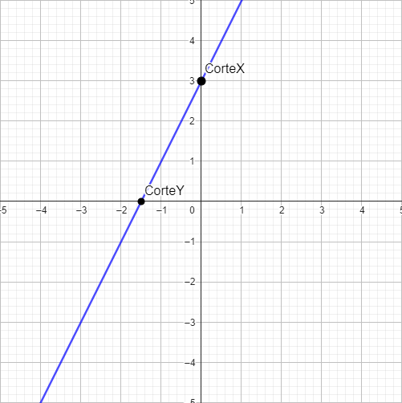
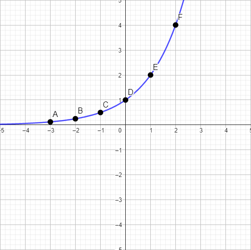

| HOME | 1° Trimestre | 2° Trimestre | 3° Trimestre | Enviar Comentários | Graphic Design |
Para interpretar ou fazer os graficos, é necessário aprender plano cartesiano
É um plano com 2 direções, X e Y, onde adotamos Y como altura, e X como largura
Se já temos a função, podemos substituir um valor tanto no lado esquerdo, para descobrir o X correspondente, quanto no lado direito, para conseguir o Y correspondente.
Regras principais:
Se A > 0, gráfico crescente;
Se A < 0, gráfico decrescente;
Se A = 0, constante.
O ideal é saber ao menos o corte no eixo Y, e o corte no eixo X. Que podem ser adquiridos com:
É legal notar que na função afim, o corte no eixo Y, é sempre o valor "b" da função
Supondo que nossa função é: f(x) = 2x + 3

Como descobrir "a" e "b"?
Precisamos da variação de X e Y.
Então pegamos dois pontos. Exemplo: Supondo que recebemos: f(0,5) = 4 e f(1) = 5
a = (4 - 5) / (0,5 - 1) =
Agora, para descobrirmos o "b", basta substituir
f(1) = 5
f(1) = 2 * 1 + b
5 = 2 * 1 + b
5 = 2+b
5 - 2 = b
Comentários:
Achei o conteúdo relativamente fácil, já tinha trabalhado com plano cartesiano anteriormente, então foi só questão de entender que o X é como se fosse o tempo da física, e fazer essa interligação. Além de que já usava plano cartesiano na programação em GML.
Regras principais:
Se a > 0, concavidade para cima;
Se a < 0, concavidade para baixo;
Se a = 0, não é função afim;
∆ > 0 parábola passa do corte em Y;
∆ = 0 parábola encosta perfeitamente no corte em Y;
∆ < 0 parábola não encosta no corte em Y;
Quanto mais perto "a" for de 0, menor a concavidade;
Quanto mais longe "a" for de 0, mais extrema a concavidade
Corte em Y definido somente por "c" ("a" e "b" não o afeta).
Para desenhar a nossa função, o ideal é descobrir o corte em X, as raízes (quando existem), o vértice e alguns pontos aleatórios ajudam também.
Supondo que nossa função é: f(x) = 3x2 + 5x + 2
A primeira coisa que devemos fazer, é entender o valor de cada um.
a = 3
b = 5
c = 2
Então, podemos checar se a função tem raízes, e de quebra, pegamos o delta (∆) também.
0 = 3x2 + 5x + 2
Agora, aplicamos bhaskara
-b ± √(b² – 4 * a * c) / 2 * a
-5 ± √(5² – 4 * 3 * 2) / 2 * 3
-5 ± √(25–24) / 6
∆ = 1
-5 ± 1 / 6
Agora, precisamos descobrir os vértices, tando de X, quanto de Y.
As fórmulas são:
xv = -b/2 * a
yv = -∆/4 * a
então:
Agora, pegamos também alguns pontos aleatórios da função, para ajudar na construção.
EX:
f(1) = 3 * (1)2 + 5 * (1) + 2
f(1) = 3 + 5 + 2
f(1) = 10ㅤㅤ
f(-2) = 3 * (-2)2 + 5 * (-2) + 2
f(-2) = 3 * 4 - 10 + 2
f(-2) = 12 - 10 + 2
f(-2) = 4ㅤㅤ
Pronto!
Comentários:
O conteúdo não é muito dificil, porém, se não prestar atenção é possível errar em coisas bobas, como o cálculo da bhaskara. É preciso ter cuidado. Além disso, se você se perde um pouco no inicio do conteúdo, você se perte. Ainda mais, é preciso ter conhecimento de conteúdos já estudados, como bhaskara.
Regras principais:
Se A > 1, função crescente;
Se 1 > A > 0, função decrescente;
Se A ≤ 0, a função não existe;
Quanto mais próximo de 1, mais plaina;
Quanto maior, mais extrema.
Montando a função:
Supondo que nossa função é: f(x) = 2x
Você vai pegar a maior quantidade de X aleatórios possíveis. Quanto mais X, o mais fiel será.
f(-3) = 2-3 =
f(-2) = 2-2 =
f(-1) = 2-1 =
f(0) = 20 =
f(1) = 21 =
f(2) = 22 =
f(3) = 23 =
f(4) = 24 =
Após isso, basta ligar os pontos, seguindo o padrão exponencial.
Resultado final:
Pronto!
Comentários:
Montar o gráfico, e encontrar os pontos é fácil, o que complica é formar a função de acordo com o problema.
Primeiro, alguns principios.
Nomes dados:ㅤlogBase(Logaritmando) = Logaritmo
Lembrando que, quando a base não aparece, ela é 10.
Algumas regras:
1ª: base > 0
2ª: logatirmando > 0
3ª: logaritmo ≠ 1
EX:
log5(25) = 2ㅤㅤ
Existem consequencias da definição que o logarítmo tem:
1ª: Se a base for igual ao logaritmando, o logaritmo é 1. logx(x) = 1ㅤㅤ
2ª: loga(ax) = xㅤㅤ
3ª: aloga(x) = x
4ª: loga(x) = loga(y)ㅤㅤ
Existem também, propriedades operatórias do logaritmo:
1ª: loga(M * N) = loga(M) + loga(N)
2ª: loga(M / N) = loga(M) - loga(N)
3ª: loga(MN) = N * loga(M)
4ª: logN(M) = loga(M) / loga(N)
Alguns exemplos:
Comentários:
O conteúdo pode parecer difícil de cara, mas quando você começa a interligar a lógica de que o logaritmo é uma potenciação "invertida", fica mais simples. Porém, um ponto negativo é ter que decorar as propriedades (é possível também entender a lógica por trás para te tornar mais simples a aplicação também).